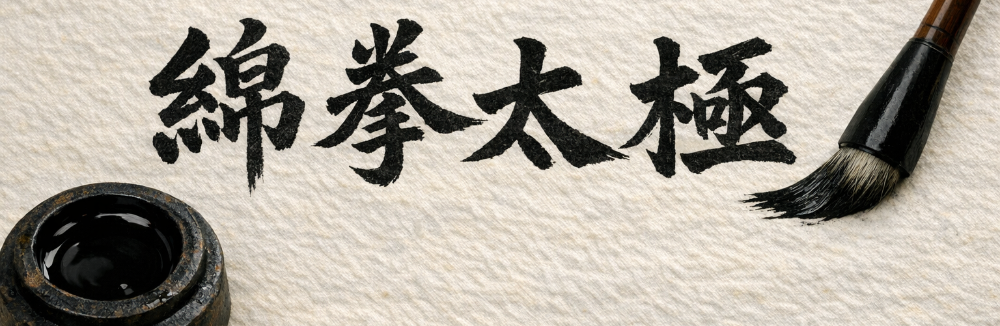

Mian Quan Tai Ji es el resultado de más de dos décadas de práctica, estudio y reflexión en torno al Tai Ji Quan.
Mi camino se ha visto profundamente influido por el sistema Chikung TaiChi transmitido por el maestro Haoqing Liu, con quien tuve la fortuna de aprender durante más de quince años. Este sistema, rico en matices, integra la herencia del estilo Yang de la línea de Niu Chunming, el estilo Hong Junsheng y diversas prácticas de Qi Gong taoísta, conformando un cuerpo vivo de conocimiento.
A lo largo de estos años he explorado también otras líneas y enfoques, contrastando métodos, principios y perspectivas. De ese proceso nació una metodología propia, diseñada para acercar la práctica a la mentalidad occidental y para evitar la dependencia de conceptos chinos excesivamente abiertos o polisémicos, que con frecuencia generan interpretaciones confusas o contradictorias.
Mian Quan Tai Ji es una propuesta de sistema de Tai Ji Quan basada en el estilo Yang (línea Niu Chunming), enriquecida con principios del estilo Hong Junsheng y con fundamentos del Qi Gong taoísta. Su objetivo es preservar los principios tradicionales del arte, pero integrando una metodología contemporánea, analítica y crítica frente a los dogmatismo infundado y a la enorme cantidad de información —y desinformación— que circula hoy en día sobre el Tai Ji Quan.
Es, en esencia, un camino claro y estructurado para quienes buscan una práctica rigurosa, comprensible y fiel al espíritu del Tai Ji Quan, sin renunciar a una mirada moderna y exigente.
Esta guía no pretende establecer una verdad definitiva ni presentarse como autoridad última. Es una propuesta metodológica e interpretativa de los conceptos clásicos: una manera de organizar la práctica que pueda ser útil tanto a quienes se inician como a practicantes experimentados que deseen ampliar o contrastar su visión.
Mi intención es que esta web sea una herramienta que acompañe al interesado en su propio recorrido y le ayude a encontrar su propia comprensión dentro de la riqueza inagotable del Tai Ji Quan.